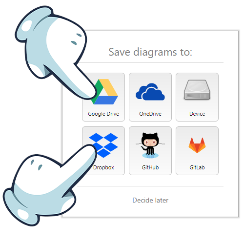
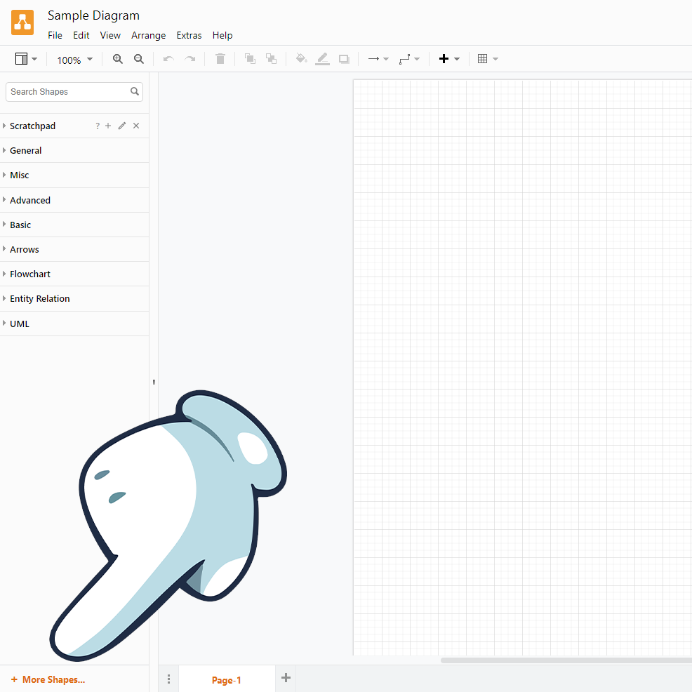
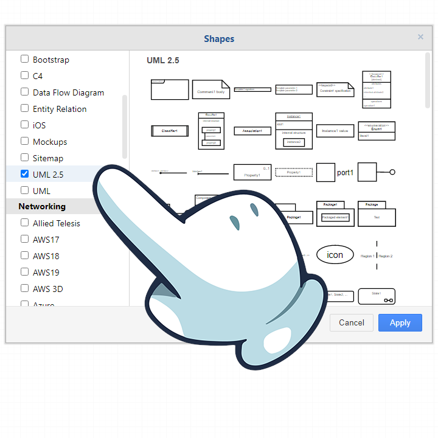
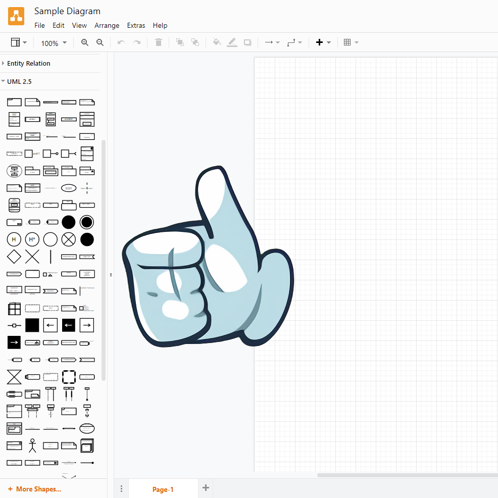

Bukalah halaman Draw.io.
Ketika ditanya Save diagrams to: pilih antara Google Drive atau Dropbox.

Kita perlu diagram UML 2.5.
Klik pada More Shapes... di kiri-bawah!

Centanglah UML 2.5 pada kolom kiri.
Kamu bisa matikan centang pada diagram lainnya, kecuali UML biasa.

Sekarang kita siap!
Silakan klik pada topik 1-4 yang ada pada navigasi atas untuk memulai belajar tentang diagram tersebut!
